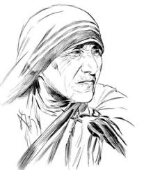

Mother Teresa

Most admired person of the 20th Century
- One of the greatest gifts God has given to each of us is our memory. Because of it we have images of wonderful things that have happened to us in the past by people who were so concerned about us.
- On a larger scale, the world now has a great memory of a woman called Mother Teresa. A simple nun who lived a simple life not just preaching the gospel, but living the gospel she preached.
- Anyone who has seen a picture in the newspaper about her or a television show about her has a great memory. She not only brought Christ to the people of the world, she was Christ in the memory of many who were touched by her.
- The leper, the Aids patient, the poor, the indentured, many of them have had dismal memories of the past, but this woman gave them a memory they will cherish forever. They will have a reason for hope. They will have a better life waiting them. They will have a God deep in love with them.
- No woman in the last one hundred years has created an impact on the memory of mankind as has Mother Teresa. When Christ gave the words, "when I was hungry, you gave me to eat; when I was thirsty you gave me to drink and naked you clothed me", Mother Teresa helped those words become reality in the lives of the unfortunate who had very few good memories.
- If she is canonized, and I hope she will be, her legacy will be known for compassion. Thousands of words have been spoken about her and what she has done for the downtrodden and the unfortunate. She gave love and it was unconditional.
- Dylan Thomas once said that love is gratitude with a memory. To Mother Teresa we can simply say, "thanks for the memories".